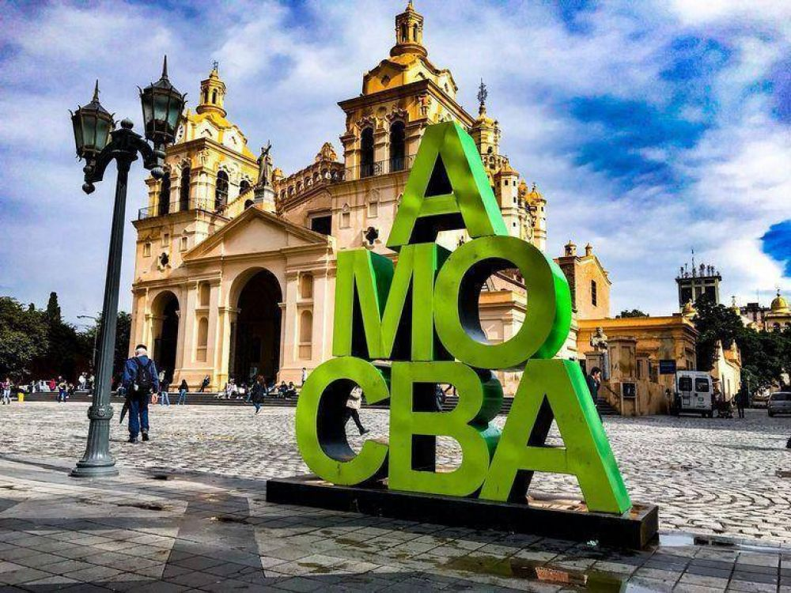
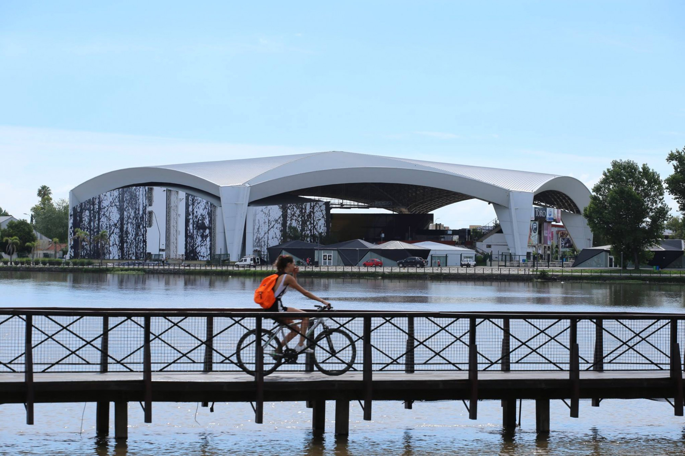
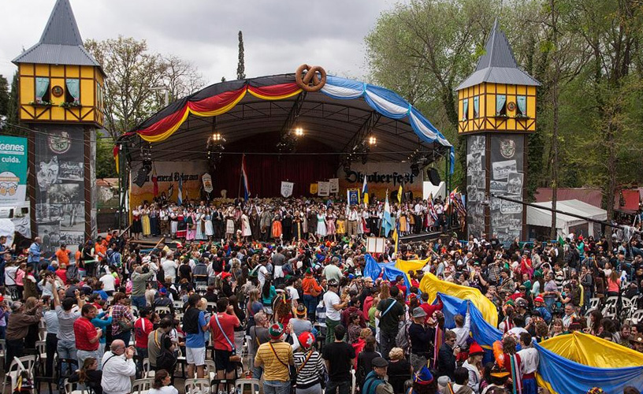
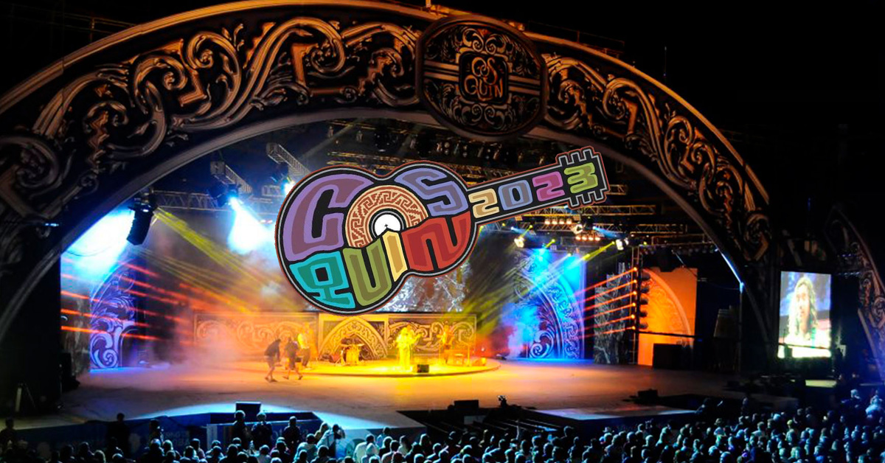

La Provincia de Córdoba es un destino ideal para experimentar las más diversas sensaciones que a un
viajero le puedan provocar placer. Con una indeleble impronta cultural e histórica, nuestro
territorio combina tradición, modernidad y una excepcional riqueza paisajística. Por la variedad de
destinos que propone su geografía, es un lugar donde el turista podrá disfrutar todo el año
propuestas siempre novedosas.
Existen varias opciones para disfrutar de la ciudad. Una de ellas es visitar sus museos históricos,
religiosos, de ciencias naturales, antropología y demás, son espacios culturales imperdibles.
Además, sus espacios verdes son los mejores escenarios para disfrutar en familia o con amigos, que
se complementan con los paseos de artesanos y sus diversos rincones gastronómicos para degustar
sabores regionales.

TURISMO POR VILLA MARIA
Villa María es la tercera ciudad más grande de la provincia. Si bien es reconocida por su tradicional
Festival de Peñas, también puede disfrutarse de sus paisajes naturales, sus variados museos y su
área peatonal.
Alrededor de este espejo de agua se encuetran otros dos símboloes de la localidad: el puente Juan
Domingo Perón y la costanera, de unos 16 kilómetros de extensión. Elegida para caminar o dar paseos
en bicicleta, también se pueden aprovechar sus instalaciones para hacer gimnasia o, en época
estival, sus asadores, mesas y sillas. Se suma a la postal el imponente Anfiteatro Municipal.
La mejor época del año para visitar Villa María es durante el mes de febrero, donde es posible
participar del emblemático Festival Internacional de Peñas.

TURISMO POR LA FALDA
La Falda es un paraje serrano imponente para visitar en el Valle de Punilla.
Reconocida por ser tierra de festivales y celebraciones, La Falda se vive a través de la
gastronomía,la música y la danza, combinación que se repite en cada época del año. De esta manera,
convoca con
su tradicional Festival Nacional de Tango en Julio, la Fiesta Nacional del Alfajor en octubre, La
Falda Rock en noviembre y La Falda Bajo Las Estrellas en enero y febrero.
Complejo recreativo las Siete Cascadas ubicado a 15 minutos del microcentro de la ciudad.
Rodeado de una exuberante vegetación el complejo cuenta con un área de servicios que ofrece
distintas alternativas gastronómicas, espacios destinados para los más pequeños, dos Natatorios, una
Piscina para niños, Toboganes Acuáticos, Asadores, Sanitarios, Proveeduría, Paseo de Artesanos y
diferentes espacios verdes destinados a satisfacer las más grandes expectativas a los turistas que
nos visitan.
TURISMO POR VILLA GRAL BELGRANO
En el mes de octubre, Villa General Belgrano se viste de Fiesta en el evento más importante del año!!
Villa General Belgrano se encuentra en la región de Córdoba conocida como el «Valle de los grandes
lagos». Aquí se puede recorrer el paseo de los arroyos, subir a las Sierras chicas, pasear por sus
calles céntricas con una atmósfera centroeuropea única y disfrutar de una gastronomía tan variada
como las colectividades que integran y le dan identidad a nuestro pueblo.
Del 30 de septiembre al 10 de octubre se celebra en Villa General Belgrano la 60° Oktoberfest. El
Bosque de los Pioneros
se preparó durante los meses previos para recibir a vecinos, turistas, artistas, y a todos los
actores que hacen posible
la fiesta.

TURISMO POR COSQUIN
A puro folcklore y un río que es un protagonista serrano, Cosquín se deja descubrir entre diversos
atractivos culturales y naturales.
Para conocer Cosquín es fundamental tener un contacto directo con la naturaleza y su historia.
Descubrir su corazón verde es poder disfrutar de sus múltiples balnearios. Incluso, si la
temperatura no acompaña para darse un chapuzón, un picnic a la orilla del río siempre es una buena
manera de hacer una pausa.
El Cosquín Rock es uno de los festivales más importantes de Latinoamérica. Su historia cuenta que el
«Festival» como se lo conoce en el ambiente rockero, toma el nombre de la ciudad que lo vio nacer y
que por cuestiones de espacio y seguridad comenzó a mudarse lentamente a las afueras de la misma.

TURISMO POR VILLA CARLOS PAZ
Ciudad turística por excelencia, Villa Carlos Paz ofrece una propuesta completa de actividades al
aire libre y rincones naturales, parques de entretenimiento y diversos atractivos culturales.
Esta villa turística, situada a solo 30 minutos de la ciudad de Córdoba, es una de las más
importantes de la provincia y del país. Elegida por su especial clima serrano, es posible disfrutar
de sus paisajes durante todo el año.
Destacan, sobre todo en verano, sus balnearios naturales a la
vera del río San Antonio y el arroyo Los Chorrillos. El dique San Roque es otro de sus principales
atractivos. En él se realizan deportes náuticos, paseos en lancha y en hidropedal, e incluso
buceo.
Villa Carlos Paz es un destino perfecto para conocer, también, desde su perspectiva urbana. Un
recorrido por sus principales rincones citadinos implicará conocer su emblemático reloj Cucú,
partiendo desde el “centro viejo” hasta el Paseo de las Farolas y continuando por el “centro nuevo”
y pasear por la Av. Libertad, una de las calles principales, donde sobresale una gran propuesta
comercial y gastronómica.